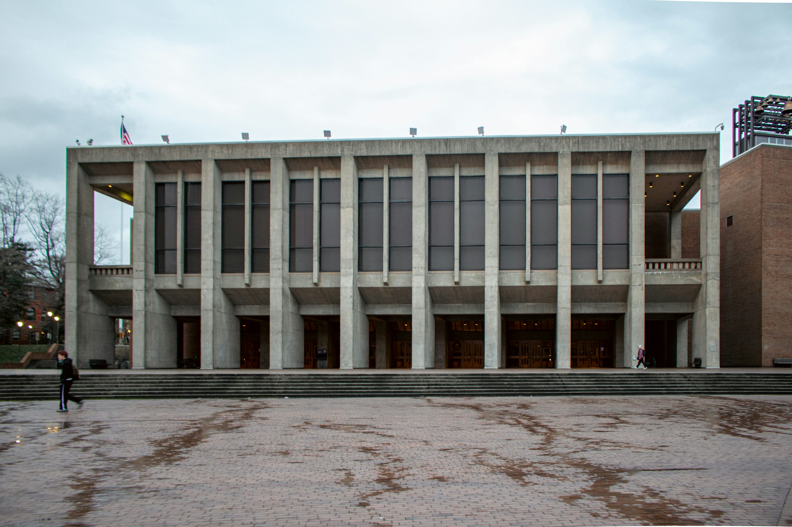
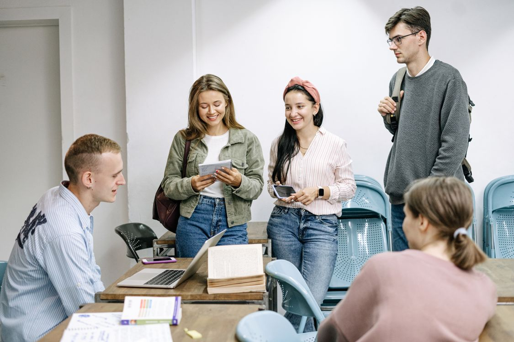

QMU / APPLIED PSYCHOLOGY
研究生生活，从这里开始
背景音乐

走进开放的校园，让好奇心有处安放，让每一个新的想法，都有发生的空间。

在科学、人文与创意之间探索，找到让你愿意不断深入的那个问题。
从一本书、一场讨论到一次实践，在思考与尝试中，慢慢建立自己的视角。
找到你的伙伴，也发现不一样的自己。让共同的热爱，成为大学生活的日常。
带着在这里积累的知识与勇气，走向更广阔的世界，写下自己的下一章。
了解专业方向，梳理招生信息，让每一步选择，都更加清晰。
梳理报考方向，认真准备资料，带着你的目标，开启新的旅程。
认识老师的研究与教学方向，寻找与你的兴趣相连的问题。
带着问题观察与思考，让每一次实践，成为成长的积累。